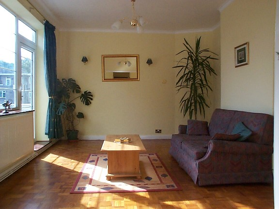
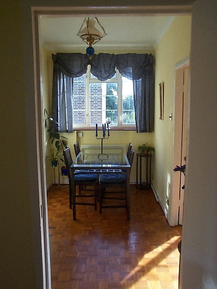
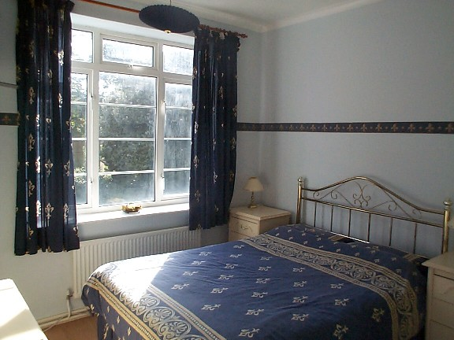
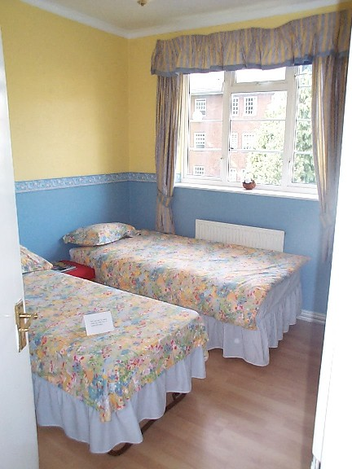
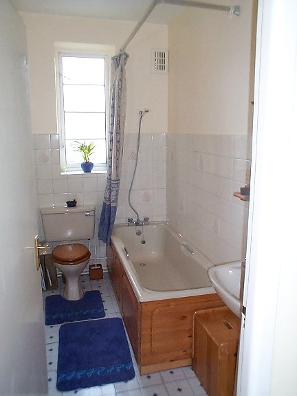
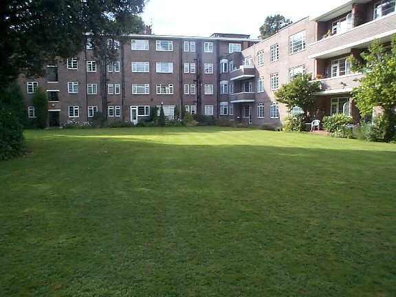

Our Flat on Wimbledon Common
We're looking to rent our flat on the edge of Wimbledon Common.
We loved it, but outgrew it and just moved to a bigger house nearby.
It's the coolest place you will ever live, come and see! Call Andy Robinson
on 07976-355742, Alisa on 0208-286-3532, or
email andy@reportlab.com.
Rent: approx £1500 per month
Facilities:
- Just redecorated throughout
- 3 bedrooms (2 double, 1 single bedroom or ideal for a study)
- large, light living area overlooking beautiful communal garden. Sofa
bed for guests
- balcony (great for barbecues in summer!)
- dining area with large new table and chairs
- Kitchen with fridge, freezer, microwave, washer/dryer, gas hob,
coffee machine, toaster, kettle, all new cutlery and crockery etc.
- Bathroom
- Second toilet
- Plenty of off street parking
- Freeholders will rent garages for approx £500 per annum
for cars or serious storage
- Caretaker, entryphones etc.
Location: the block is on Parkside, one of the most impressive
addresses in the area and directly overlooking Wimbledon Common.
Here is a map.
400m from the A3; ideal for quick getaways from London or anyone
working in Surrey. 12 min walk to Southfields tube, or alternatrively
take the 93 bus to either Putney or Wimbledon BR (whichever is first,
ten minutes) then fast trains to Waterloo in 16 minutes. Close
to Wimbledon Village and Putney High Street which offer excellent
nightlife, restaurants, shopping etc. The BEST location in london
for running, mountain bikes etc.

The living room

Dining area

Double Bedroom

Another double bedroom (one bed folds away if needed)

Bathroom

Garden, just outside the living room